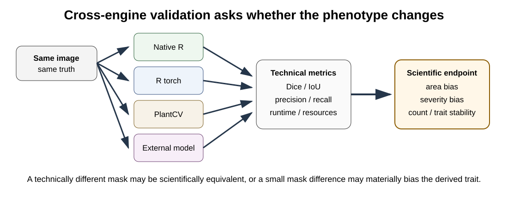

OmniPhenoR Cross-Engine Validation: Classical R, Torch, PlantCV, and External Models
Source:vignettes/v21-cross-engine-validation.Rmd
v21-cross-engine-validation.RmdPurpose
A package that supports several engines should not imply that they are interchangeable. OmniPhenoR 0.3.0 makes cross-engine comparison explicit so that a researcher can evaluate whether different defensible processing methods lead to materially different phenotypes.

1. Segmentation comparison
truth <- pheno_data("leaf_mask")
img <- pheno_data("leaf_rgb")
native <- pheno_segment(img, "ExG")
perfect <- truth
pheno_cross_engine_validate(
truth,
native=native,
reference=perfect,
type="segmentation"
)
#> # A tibble: 2 × 14
#> engine tp tn fp fn iou dice precision recall specificity f1
#> <chr> <int> <int> <int> <int> <dbl> <dbl> <dbl> <dbl> <dbl> <dbl>
#> 1 native 2872 9416 0 0 1 1 1 1 1 1
#> 2 refere… 2872 9416 0 0 1 1 1 1 1 1
#> # ℹ 3 more variables: balanced_accuracy <dbl>, area_bias <dbl>,
#> # boundary_disagreement <dbl>The point is not to force agreement. Disagreement can reveal sensitivity to background, color, boundary definition, or model assumptions.
2. Detection comparison
truth_d <- pheno_detection(data.frame(
class="flower",confidence=1,
xmin=10,ymin=10,xmax=40,ymax=45
))
model_a <- pheno_detection(data.frame(
class="flower",confidence=.9,
xmin=11,ymin=11,xmax=41,ymax=44
))
model_b <- pheno_detection(data.frame(
class="flower",confidence=.8,
xmin=8,ymin=9,xmax=38,ymax=46
))
pheno_cross_engine_validate(
truth_d,
A=model_a,
B=model_b,
type="detection"
)
#> # A tibble: 2 × 9
#> engine tp fp fn precision recall f1 mean_iou count_bias
#> <chr> <int> <int> <int> <dbl> <dbl> <dbl> <dbl> <int>
#> 1 A 1 0 0 1 1 1 0.884 0
#> 2 B 1 0 0 1 1 1 0.831 03. Different questions require different metrics
| Scientific endpoint | High-priority validation |
|---|---|
| leaf area | area bias, repeatability, mask boundary |
| disease severity | lesion area bias, severity bias |
| flower count | count bias, recall, false positives |
| leaf shape | contour fidelity, shape metrics |
| spatial location | centroid/coordinate error |
| per-organ variability | one-to-one instance matching |
Dice or IoU alone is rarely sufficient for every endpoint.
4. Compare final traits
pheno_trait_metrics(
truth=c(100,120,90,135,110),
prediction=c(98,123,88,132,111)
)
#> # A tibble: 1 × 7
#> n bias mae rmse relative_bias correlation ccc
#> <int> <dbl> <dbl> <dbl> <dbl> <dbl> <dbl>
#> 1 5 -0.6 2.2 2.32 -0.00541 0.990 0.989If two engines have similar segmentation metrics but one has much smaller trait bias, the latter may be scientifically preferable.
5. Benchmark computation separately
Accuracy and runtime are different dimensions.
img <- pheno_data("leaf_rgb")
pheno_benchmark(
img,
methods=list(
native=function(z) pheno_segment(z,"ExG"),
rgb=function(z) pheno_rgb_indices(z,c("ExG","GLI"))
),
repetitions=1
)
#> # A tibble: 2 × 8
#> method repetition elapsed_sec output_mb memory_delta_mb gpu_memory_mb
#> <chr> <int> <dbl> <dbl> <dbl> <dbl>
#> 1 native 1 0.0200 0.0486 0.100 NA
#> 2 rgb 1 0.0200 0.188 0.1000 NA
#> # ℹ 2 more variables: input_dimensions <chr>, device <chr>Heavy GPU benchmarks should be run separately and frozen as release artifacts. Do not make every package installation repeat them.
6. Ensemble as a sensitivity tool
m <- pheno_data("leaf_mask")
consensus <- pheno_ensemble(m, m, threshold=.5)
consensus
#> <pheno_prediction>
#> engine: ensemble device: cpu
#> mask dimensions: 96 x 128An ensemble can be used to quantify agreement rather than blindly replacing a validated primary method. For example, the fraction of pixels where methods disagree can become a QC indicator.
7. Frozen example
pheno_example_result("cross_engine_demo")
#> engine dice iou area_bias runtime_sec note
#> 1 native_exg 0.94 0.89 -0.012 0.018 frozen teaching result
#> 2 torch_unet 0.97 0.94 -0.004 0.052 frozen teaching result
#> 3 plantcv_adapter 0.95 0.91 0.008 0.074 frozen adapter resultThis compact table is distributed with the package. A heavy real-backend benchmark can be regenerated separately by the developer.
8. Avoid unfair comparisons
Common sources of unfair comparison include:
- different image resizing;
- different test sets;
- different confidence thresholds;
- tuning one model on the test data;
- comparing CPU runtime to GPU runtime without reporting hardware;
- using different class definitions;
- including preprocessing time for one engine but not another.
A benchmark table should state exactly what was timed.
9. Sensitivity analysis without treatment-driven tuning
Processing choices should be selected using independent annotation, repeatability, physical references, or prespecified sensitivity analyses. They should not be optimized to maximize downstream significance.
A useful strategy is to freeze a small set of defensible alternatives and ask whether the scientific conclusion changes materially.
10. Reporting cross-engine results
A concise report should state:
- primary engine and why it was chosen;
- alternative engines used for sensitivity analysis;
- validation set and annotation procedure;
- accuracy metrics;
- phenotype bias metrics;
- hardware/runtime conditions;
- model hashes and versions;
- whether scientific conclusions were stable.